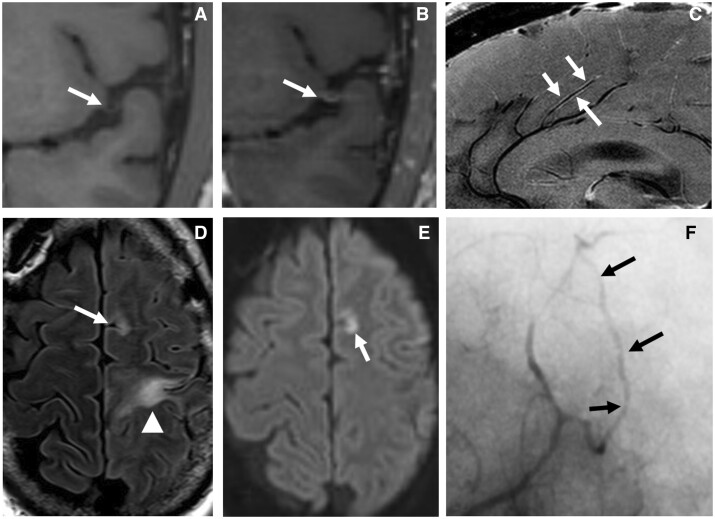
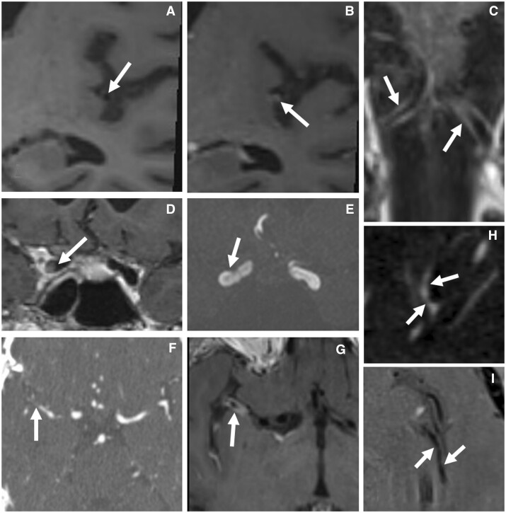
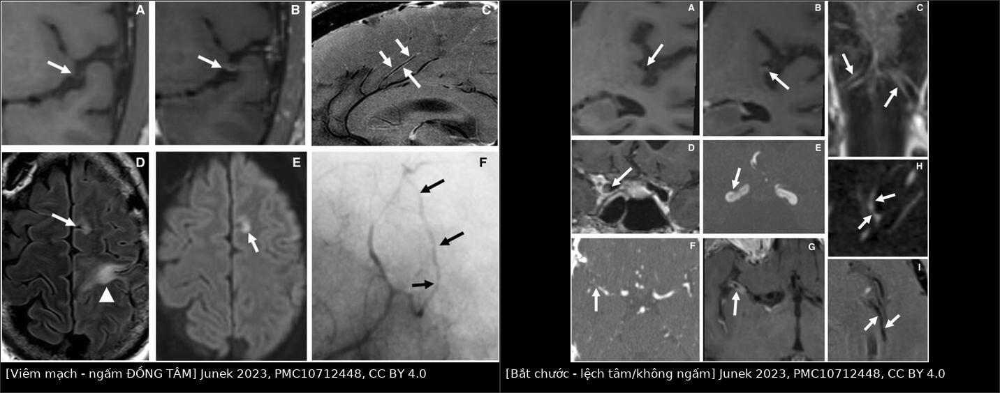
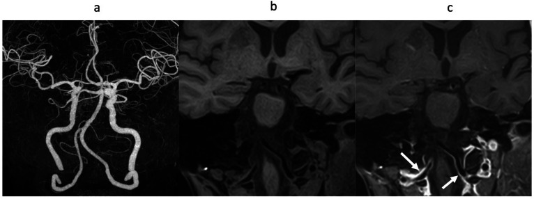
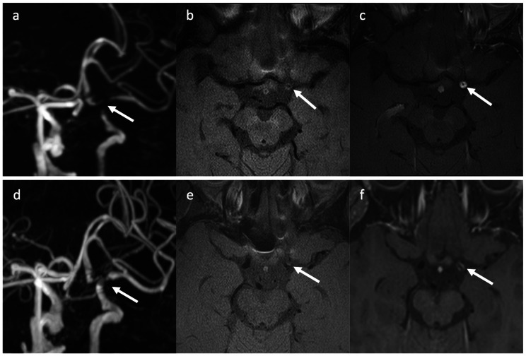

241 — Đọc HR-vwMRI thành mạch nội sọ: ngấm ĐỒNG TÂM vs LỆCH TÂM — viêm mạch, xơ vữa, RCVS, moyamoya / Reading high-resolution vessel wall MRI: concentric vs eccentric enhancement
Tags: pattern:ngam-thanh-mach pattern:viem-mach-nao vung:mach-nao vung:nao score:VWE-0-3 protocol:HR-vwMRI
Mức chắc chắn (certainty): tổng hợp y văn (literature synthesis) — kỹ thuật + số liệu từ 4 bài mở (PMC10552670, PMC10712448, PMC13517854, PMC13044975); các ca trong quiz là ca nguyên văn (verbatim case) chép đúng tuổi – giới – chú thích hình gốc.
1. Tổng quan — đọc được thành mạch vì vật lý nào, và ngấm nghĩa là gì (TẠI SAO)
- Vì sao phải 3T + "máu đen": thành động mạch nội sọ dày 0,2–0,3 mm, chỉ bằng ~1/10 đường kính lòng (M1 và thân nền tới 3 mm); muốn thấy thành phải có độ phân giải trong mặt phẳng 0,25–0,5 mm và triệt tín hiệu dòng chảy (black-blood). 3T cho SNR gấp đôi 1,5T → điều kiện bắt buộc để đọc thành mạch. Khuyến cáo ASNR VWISG chọn voxel 2,0 × 0,4 × 0,4 mm, FOV 10–13 cm (2D), lát 2 mm; 3D dùng chuỗi TSE biến góc lật (SPACE/SAMPL) + fat-sat, che phủ toàn não, không dùng ECG-gating vì TR biến thiên theo nhịp tim làm mất tương phản T1 (PMC10552670).
- TẠI SAO thành ngấm thuốc: gadolinium không tự vào thành mạch — nó rò từ mao mạch nuôi thành (vasa vasorum) ở lớp áo ngoài khi tính thấm nội mô tăng. Viêm → phù thành → T2 tăng tín hiệu (gặp 94% ca đang hoạt động lâm sàng, nhưng vẫn 56% ca "không hoạt động"); mô bệnh học chứng minh viêm hoạt động ở 44% ca được coi là "không hoạt động" → HR-vwMRI phản ánh mô bệnh tốt hơn lâm sàng (PMC10552670).
- TẠI SAO RCVS co mạch mà KHÔNG ngấm: cơ chế là co – xếp gấp tế bào cơ trơn làm thành dày chu vi, không có viêm trên mô bệnh học → ngấm rất nhẹ hoặc không ngấm. Đây là chốt cơ chế phân biệt với viêm mạch (PMC10552670).
- TẠI SAO xơ vữa ngấm LỆCH TÂM: mảng xơ vữa là lõi lipid + nắp xơ khu trú một phía, kèm tái tạo dương (positive remodeling) — thành dày ra để giữ lòng; ngấm do tân mạch trong mảng, không phải viêm lan toả chu vi.
- Ngưỡng định lượng nằm lòng:
- Độ dày thành bất thường: bình thường 0,2–0,3 mm; loạt 19 ca nghi bệnh mạch viêm: trung vị 2,2 mm (IQR 1,8–2,8; khoảng 1,4–3,8) — tức dày gấp ~7–10 lần (PMC13517854).
- Thang ngấm thành mạch (VWE grade) 0–3: 0 = không ngấm; 1 = nhẹ; 2 = vừa; 3 = mạnh (thang thứ tự, không phải tỷ số định lượng — không chuẩn hoá theo cuống tuyến yên) (PMC13517854).
- Hình thái: đồng tâm thuần 15/19 (78,9%) ở nhóm nghi bệnh mạch viêm; 3/13 ca viêm mạch TKTW có thể LỆCH TÂM (PMC10552670) → lệch tâm không loại trừ viêm mạch.
- Phân bố: MCA 17/19 (89,5%), ICA 13/19 (68,4%), PCA 6/19, V4 5/19, thân nền 3/19 (PMC13517854).
- Theo dõi (trung vị 391 ngày, 17 ca): VWE grade giảm ở 13/17 (76,5%), không ca nào tăng; độ dày thành tối đa 2,0 → 1,4 mm; nhưng hẹp lòng chỉ giảm 7/17, ổn định 10/17 → ngấm mất trước, hẹp lòng ở lại (PMC13517854).
- Ý nghĩa huyết động: hẹp lệch tâm + ngấm mạnh ở chạc ICA/M1 kèm TTP trễ ~2 giây ở lãnh thổ MCA cùng bên = hẹp có ý nghĩa huyết động, không chỉ "đẹp hình" (PMC13517854).
- Cửa sổ corticoid: khả năng phát hiện ngấm thành giảm sau 2 ngày dùng corticoid → chụp trước hoặc ngay khi bắt đầu điều trị (PMC10552670).
2. Mẫu hình + chẩn đoán phân biệt theo hình thái ngấm (Gamut)
- ĐỒNG TÂM – ĐỀU – NGẤM MẠNH (bờ trong nhẵn) → nghĩ VIÊM:
- PACNS (viêm mạch TKTW nguyên phát) và viêm mạch thứ phát: lupus (NPSLE), Behçet, ANCA, IgG4, nhiễm trùng (VZV, lao, nấm), do xạ (ngấm tồn tại nhiều năm).
- Iatrogenic: sau lấy huyết khối cơ học — ngấm chu vi do tổn thương nội mô, KHÔNG phải viêm mạch (PMC10712448, Hình 2G).
- ĐỒNG TÂM nhưng NGẤM NHẸ/KHÔNG NGẤM → nghĩ CO MẠCH:
- RCVS (co mạch não có hồi phục): hẹp đa ổ "chuỗi hạt" + không ngấm, hồi phục < 3 tháng.
- Co mạch sau SAH phình mạch (đỉnh ngày 4–14) — ngấm thành mạch không phải bản chất.
- LỆCH TÂM – NGẤM KHU TRÚ – TÁI TẠO DƯƠNG → nghĩ XƠ VỮA NỘI SỌ (ICAD): mảng ở một phía, nắp xơ ngấm nhẹ, lõi lipid T2 tối; ngấm mạnh = mảng "nóng" (dễ gây nhồi máu).
- CÓ CẤU TRÚC TRONG THÀNH → nghĩ BÓC TÁCH: vạt nội mạc hoặc máu tụ thành mạch (T1 sáng trong vài ngày đến 2 tháng).
- HẸP ĐOẠN TẬN ICA HAI BÊN + "VANISHING MCA" + tuần hoàn bàng hệ nền sọ → MOYAMOYA: ngấm thành mạch ≥ cuống tuyến yên gặp 76,5% ca có thiếu máu não và 23,5% ca không thiếu máu; đường kính ngoài mạch nhỏ lại (khác tái tạo dương của xơ vữa).
- NGẤM Ở ĐÚNG CHỖ MẠCH XUYÊN MÀNG CỨNG (V3–V4 ĐM đốt sống, ICA hang/trên lều) → VASA VASORUM bình thường, không phải viêm.
- Mnemonic đọc nhanh: "NHẴN – ĐỀU – MẠNH = VIÊM"; "LỆCH – GỒ – TÁI TẠO = VỮA XƠ"; "HẸP NHIỀU Ổ – KHÔNG NGẤM – HỒI PHỤC = RCVS".
3. Bảng so sánh phân biệt (ma trận đối chiếu)
| Thực thể (entity) | Hình ảnh điển hình trên HR-vwMRI | Chốt vào (rule-in) | Chốt loại (rule-out) | Gợi ý xác nhận |
|---|---|---|---|---|
| Viêm mạch / PACNS | Dày + ngấm đồng tâm, đều, mạnh (VWE 2–3), nhiều đoạn nhiều mạch; T2 thành tăng; kèm nhồi máu nhiều lãnh thổ | Đồng tâm + ngấm mạnh + thời gian tiến triển tuần–tháng + DNT bất thường | Không ngấm + hồi phục < 3 tháng → RCVS; lệch tâm + tái tạo dương → xơ vữa | DNT, loại trừ nguyên nhân hệ thống/nhiễm; sinh thiết não (nhắm vùng ngấm: Se 89% vs 50% nếu mù) |
| RCVS | Co mạch đa ổ "chuỗi hạt", thành dày chu vi nhưng ngấm nhẹ/không | Đau đầu sét đánh tái diễn + không/ngấm nhẹ + hồi phục < 3 tháng | Ngấm mạnh đồng tâm, tiến triển → viêm mạch | MRA/CTA lặp 2–3 tuần; tránh corticoid |
| Xơ vữa nội sọ (ICAD) | Lệch tâm, mảng một phía, tái tạo dương, nắp xơ ngấm nhẹ, lõi lipid T2 tối | Lệch tâm + tái tạo dương + yếu tố nguy cơ (THA, ĐTĐ, hút thuốc) | Đồng tâm đều + ngấm mạnh + trẻ, không yếu tố nguy cơ → viêm | HR-vwMRI + TOF; đôi khi xơ vữa vẫn đồng tâm → đọc cùng bối cảnh |
| Bóc tách nội sọ | Vạt nội mạc hoặc máu tụ thành mạch (T1 sáng), thường một mạch, có thể giả phình | Vạt/máu tụ trong thành + khởi phát đau cổ/cổ gáy | Không có vạt, nhiều mạch đối xứng → RCVS/viêm | HR-vwMRI T1 không tiêm + CTA/MRA; theo dõi tín hiệu máu |
| Moyamoya | Hẹp/occlusion tận ICA hai bên, "vanishing MCA", đường kính ngoài nhỏ, "khói thuốc" | Hẹp tận ICA hai bên + bàng hệ nền sọ + ngấm thành mạch | Tái tạo dương, một mảng khu trú → xơ vữa | MRA/DSA; HR-vwMRI phân biệt tái tạo âm |
| Vasa vasorum / lão hoá | Ngấm dọc mạch liên tục từ ngoài sọ vào, đúng chỗ xuyên màng cứng; thường hai bên, đối xứng | Đúng vị trí giải phẫu + không hẹp lòng + không triệu chứng tương ứng | Ngấm khu trú + dày thành + hẹp lòng → bệnh thật | So sánh bên đối diện, nhiều bình diện, đối chiếu TOF |
| Sau lấy huyết khối / can thiệp | Ngấm chu vi lan toả tại đoạn vừa can thiệp, có thể kèm khuyết đầy do dòng chảy | Tiền sử can thiệp đúng đoạn đó trong vài ngày | Ngấm ở đoạn KHÔNG can thiệp, nhiều mạch → viêm | So phim trước can thiệp; đọc cùng bệnh sử |
| Co mạch sau SAH | Co mạch quanh túi phình đã vỡ, cùng bên, đỉnh ngày 4–14 | SAH bể nền + co mạch tương ứng lượng máu | SAH lồi + co mạch đa ổ không tương ứng → RCVS | CT/DSA; xanthochromia DNT |

HR-vwMRI T1 SPACE: (A) trước và (B) sau gadolinium — ngấm ĐỒNG TÂM thành mạch (mũi tên); (C) 7T: ngấm lan toả các nhánh động mạch quanh thể chai ở ca PACNS có sinh thiết; (D) FLAIR tổn thương nhu mô nhiều tuổi; (E) DWI ổ nhồi máu cấp; (F) DSA "chuỗi hạt" nhánh xa ĐM não trước. Nguồn: Junek M et al., Rheumatol Adv Pract 2023 (PMC10712448), CC BY 4.0.
Các "bẫy" của HR-vwMRI: (A–B) xơ vữa M2 lệch tâm trước/sau gadolinium; (C) ngấm vasa vasorum đoạn V4 gần; (D–G) sau lấy huyết khối: khuyết đầy do dòng chảy (D) nhưng TOF thông (E), CTA tắc M1 xa (F), ngấm chu vi do can thiệp (G); (H–I) RCVS: hẹp đa ổ trên CTA (H) nhưng KHÔNG ngấm trên HR-vwMRI (I). Nguồn: Junek M et al., Rheumatol Adv Pract 2023 (PMC10712448), CC BY 4.0.
Ảnh ghép letterbox giữ nguyên tỷ lệ: trái — viêm mạch TKTW, ngấm ĐỒNG TÂM đều cả chu vi; phải — các bắt chước: xơ vữa LỆCH TÂM, vasa vasorum, ngấm sau lấy huyết khối, RCVS KHÔNG ngấm. Nguồn: Junek M et al., Rheumatol Adv Pract 2023 (PMC10712448), Hình 1 và 2 — CC BY 4.0; ghép bằngtools/make_composite.py.
4. Protocol chụp + thang điểm & thuật toán đọc
- Máy & chuỗi: 3T + cuộn đầu; 3D T1 SPACE fat-sat black-blood TRƯỚC và SAU gadolinium với thông số y hệt; không trừ ảnh (so khớp trực tiếp trước/sau); phủ toàn não; voxel mục tiêu 0,4 × 0,4 × 2,0 mm (ASNR VWISG); 2D bổ trợ khi cần độ phân giải trong mặt phẳng 0,25–0,5 mm cho một đoạn ngắn.
- Thuốc: gadolinium 0,1 mmol/kg tĩnh mạch; chụp TRƯỚC corticoid — nếu đã dùng corticoid, giá trị đọc giảm rõ sau 2 ngày.
- Đọc theo 3 bước bắt buộc:
- Xác nhận ngấm thật: so cặp ảnh trước/sau ở ≥ 2 bình diện, đối chiếu TOF cùng đoạn; loại tĩnh mạch, dịch não tủy, dòng chảy (dùng xung ức chế dòng như MSDE khi có túi phình).
- Mô tả hình thái: đồng tâm / lệch tâm / hỗn hợp / không xác định; đo độ dày thành tối đa một phía (mm) + ghi đoạn mạch; cho điểm VWE 0–3.
- Đặt vào bối cảnh: bệnh sử (sét đánh vs tiến triển), DNT, TOF/CTA/DSA, tưới máu (TTP trễ ≥ 2 giây = có ý nghĩa huyết động).
- Theo dõi: lặp HR-vwMRI 8–12 tuần sau khi bắt đầu điều trị, rồi 3–6 tháng; đánh giá ngấm + độ dày là chỉ số hoạt động, không lấy hẹp lòng làm chỉ số đáp ứng.
flowchart TD
A[Ngấm thành mạch trên HR-vwMRI] --> B{So cặp trước và sau tiêm, đối chiếu TOF}
B -->|Trùng tĩnh mạch hoặc dòng chảy| Z[Giả ảnh, loại bỏ]
B -->|Ngấm thật của thành| C{Hình thái}
C -->|Đồng tâm, đều, mạnh| D{Bệnh sử tiến triển tuần tháng và DNT bất thường}
D -->|Có| E[Viêm mạch: PACNS hoặc thứ phát]
D -->|Không, đau đầu sét đánh tái diễn| F[RCVS: ngấm nhẹ, hồi phục dưới 3 tháng]
C -->|Lệch tâm, tái tạo dương| G[Xơ vữa nội sọ]
C -->|Vạt nội mạc hoặc máu tụ thành| H[Bóc tách]
C -->|Ngấm dọc mạch ở chỗ xuyên màng cứng| I[Vasa vasorum bình thường]
C -->|Ngấm chu vi đúng đoạn vừa can thiệp| J[Sau lấy huyết khối, không phải viêm]
E --> K[Loại trừ nhiễm trùng và bệnh hệ thống; cân nhắc sinh thiết nhắm vùng ngấm]
K --> L[Theo dõi ngấm và độ dày thành, không chấm điểm theo hẹp lòng]
5. Biến thể bình thường và cạm bẫy
- Ngấm do lão hoá (biến thể bình thường): nữ 71 tuổi, CTA không hẹp, 3D-T1 không tiêm không thấy tín hiệu thành, sau tiêm ngấm thành hai ĐM đốt sống liên tục từ đoạn ngoài sọ — đừng gọi là viêm mạch (PMC10552670, Hình 1).

(a) CTA không hẹp; (b) 3D-T1 trước tiêm không thấy tín hiệu thành; (c) sau tiêm: ngấm thành hai ĐM đốt sống liên tục từ ngoài sọ vào (mũi tên) — biến thể lão hoá/vasa vasorum, không phải viêm. Nguồn: Gomyo M et al., Magn Reson Med Sci 2023 (PMC10552670), CC BY-NC-ND 4.0 — giữ nguyên bản, không cắt/ghép.- Vasa vasorum ở chỗ xuyên màng cứng: V3–V4 ĐM đốt sống và ICA hang/trên lều luôn có thể ngấm — đọc đối xứng hai bên và đúng vị trí giải phẫu (PMC10712448).
- Nhiễm tĩnh mạch / dòng chảy: dễ "thấy ngấm" ở túi phình; dùng MSDE hoặc xung ức chế dòng, so nhiều bình diện (PMC10552670, Hình 8).
- Sau lấy huyết khối: ngấm chu vi do can thiệp, có thể kèm khuyết đầy giả do dòng chảy — không chẩn đoán viêm mạch (PMC10712448).
- Corticoid trước chụp: ngấm có thể mất trong 2 ngày → HR-vwMRI âm tính giả; luôn hỏi giờ dùng corticoid đầu tiên.
- Lệch tâm không loại trừ viêm mạch: 3/13 ca viêm mạch TKTW có dày/ngấm lệch tâm; ngược lại xơ vữa có thể đồng tâm → không bao giờ chốt chỉ bằng hình thái.
- "Không thấy ngấm" ≠ "không viêm": bệnh mạch nhỏ nằm dưới độ phân giải (thành 0,2–0,3 mm) → HR-vwMRI bình thường vẫn phải sinh thiết nếu lâm sàng mạnh.
- Hẹp lòng tồn tại sau khi ngấm đã mất: đây là xơ hoá, không phải bệnh đang hoạt động — đọc cùng bài 242.
6. Tự lượng giá — Blind Quiz
Ca 1 — Nữ, đau đầu tiến triển + thiếu hụt thần kinh khu trú tái diễn. Nhìn hai ảnh A–B trước khi mở đáp án.
- Câu hỏi: (1) Mô tả hình thái và cường độ ngấm ở A–B. (2) Ba chẩn đoán phân biệt? (3) Dấu hiệu nào chốt loại RCVS?
Bấm để hiện đáp án (findings + chẩn đoán)
- Dấu hiệu: thành mạch dày đồng tâm, đều, ngấm mạnh sau gadolinium (B, mũi tên); trước tiêm (A) không có tín hiệu tương ứng. Kèm nhồi máu nhiều tuổi trên FLAIR (D) và ổ cấp trên DWI (E).
- Chẩn đoán: viêm mạch TKTW (PACNS hoặc thứ phát) — ngấm đồng tâm phản ánh viêm xuyên thành làm tăng tính thấm nội mô.
- Ba phân biệt: viêm mạch, RCVS, xơ vữa nội sọ.
- Chốt loại RCVS: bệnh sử sét đánh tái diễn, không/ngấm rất nhẹ, hẹp hồi phục < 3 tháng; ca này ngấm mạnh + tiến triển → không phải RCVS.
- Nguồn: Junek M et al., Rheumatol Adv Pract 2023 (PMC10712448), Hình 1 — CC BY 4.0.
Ca 2 — Cùng bộ ảnh "bắt chước": chỉ nhìn để trả lời, rồi mở đáp án.
- Câu hỏi: (1) A–B là gì, vì sao không phải viêm? (2) H–I chẩn đoán gì và dấu hiệu chốt? (3) G là gì?
Bấm để hiện đáp án (findings + chẩn đoán)
- A–B: dày + ngấm LỆCH TÂM ở M2 = mảng xơ vữa (lõi lipid/nắp xơ một phía, tái tạo dương) — không phải viêm lan toả chu vi.
- H–I: RCVS — hẹp đa ổ trên CTA (H) nhưng không ngấm trên HR-vwMRI (I); chốt là co mạch không viêm + hồi phục.
- G: ngấm chu vi sau lấy huyết khối do tổn thương nội mô — bẫy iatrogenic.
- Nguồn: Junek M et al., Rheumatol Adv Pract 2023 (PMC10712448), Hình 2 — CC BY 4.0.
Ca 3 — Nữ 62 tuổi, hẹp nặng đoạn tận ICA trái; chụp trước và sau điều trị corticoid.

- Câu hỏi: (1) Mô tả b và c. (2) Vì sao phải chụp trước corticoid? (3) Sau điều trị, cái gì cải thiện?
Bấm để hiện đáp án (findings + chẩn đoán)
- Dấu hiệu: (a) TOF hẹp nặng tận ICA trái; (b, c) dày thành đồng tâm + ngấm mạnh; (d–f) sau corticoid: giảm ngấm, giảm dày thành.
- Chẩn đoán: viêm mạch — ngấm giảm sau ức chế miễn dịch xác nhận thành phần viêm.
- Vì sao chụp sớm: ngấm thành mạch giảm khả năng phát hiện sau 2 ngày corticoid → chụp muộn dễ âm tính giả.
- Cải thiện: ngấm và độ dày thành; hẹp lòng có thể còn (xơ hoá) — không đánh giá đáp ứng bằng đường kính lòng.
- Nguồn: Gomyo M et al., Magn Reson Med Sci 2023 (PMC10552670), Hình 4 — CC BY-NC-ND 4.0, giữ nguyên bản.
Bài liên quan chéo
- 229 – PACNS vs RCVS: hai bệnh chồng lấp, điều trị ngược nhau
- 219 – PRES & RCVS
- 242 – PACNS: điều trị duy trì & theo dõi tái phát
- 248 – Bóc tách động mạch cổ & giả phình
- 652 – Đột quỵ mạch máu não nhi: moyamoya & viêm mạch
Không dùng để chẩn đoán độc lập khi chưa có người hướng dẫn.